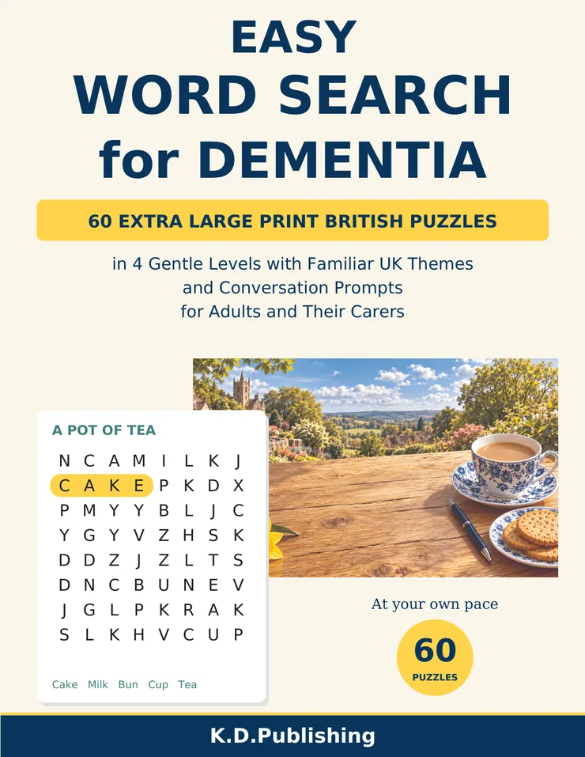
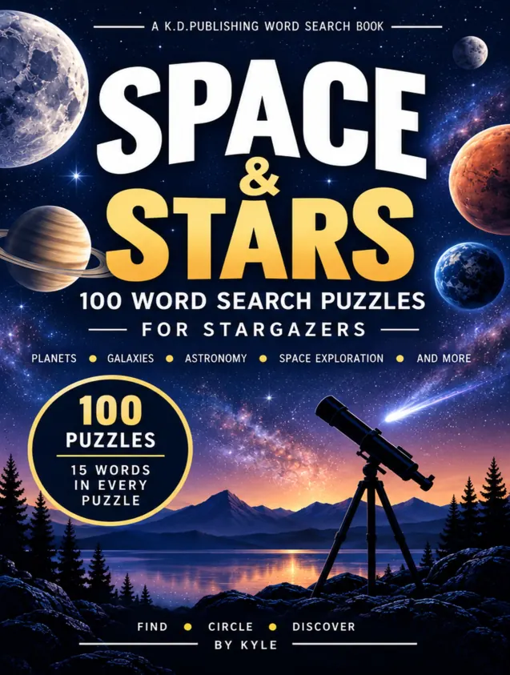
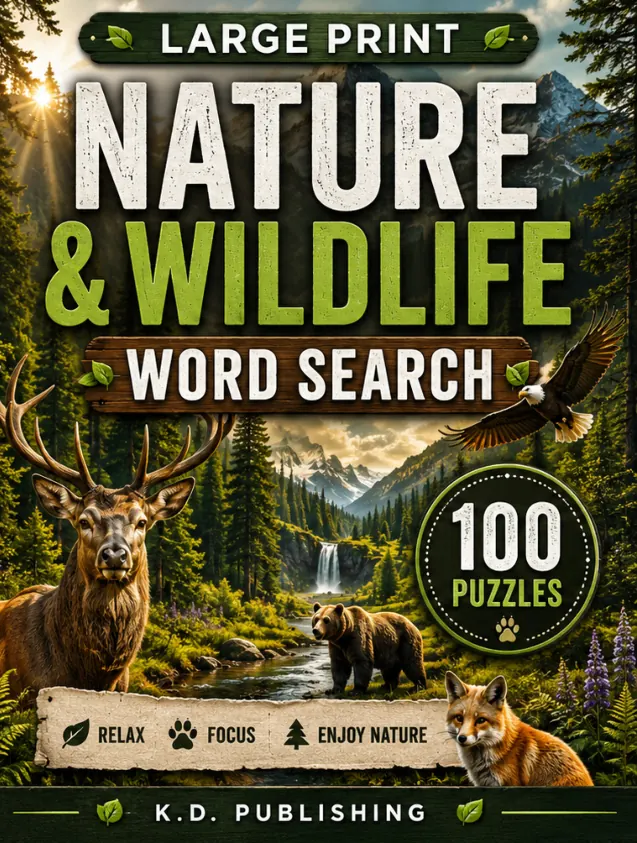

Easy Word Search for Dementia
60 Extra Large Print British Puzzles in 4 Gentle Levels with Familiar UK Themes and Conversation Prompts for Adults and Their Carers
Put the kettle on and choose a puzzle at your own pace. Easy Word Search for Dementia brings together 60 extra-large-print word searches with familiar British themes, from a pot of tea and the garden to seaside trips and village life. Choose from Gentle, Easy and Steady levels, plus an optional Challenge section. Listed words run across or down, never backwards or diagonally. Enjoy a puzzle independently or share it with a family member or carer; the conversation prompts are optional, with no need to test memory. Browse genuine puzzle and answer pages to see which level and layout feel comfortable.
- 60 puzzles with extra-large-print grids and clear word lists.
- Four levels to choose from: Gentle, Easy, Steady and an optional Challenge section.
- Familiar UK themes and optional conversation prompts.
- Listed words go across or down only, with no backwards or diagonal words.
- Answers included; choose any level and stop whenever you like.
A puzzle book for enjoyment and relaxation. It makes no claim to treat, prevent or slow any condition.
- Format
- Paperback
- Author
- Kyle Dyer
- Collection
- Word Search & Puzzle Books
- Publisher
- K.D.Publishing
- ASIN
- B0HNTX86GX
Look inside
Reduced-size samples from the finished interior. Tap a page for a closer look.
More from this shelf
British Nostalgia Word Search
100 large-print British nostalgia word searches for adults and seniors, with familiar memories of childhood, school days and seaside holidays.
See inside
Space & Stars
Word searches inspired by planets, galaxies and astronomy, with an answer key.
See inside
Nature & Wildlife
Outdoor-themed word searches covering animals, forests, birds and national parks.
See inside